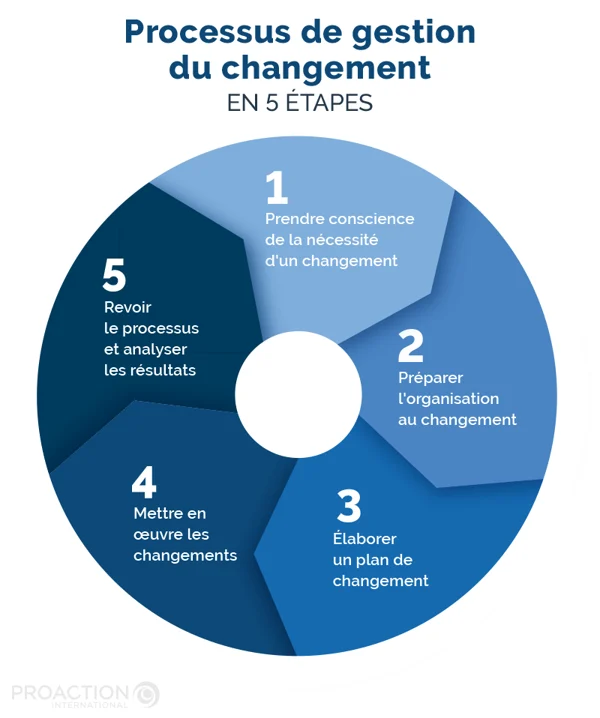
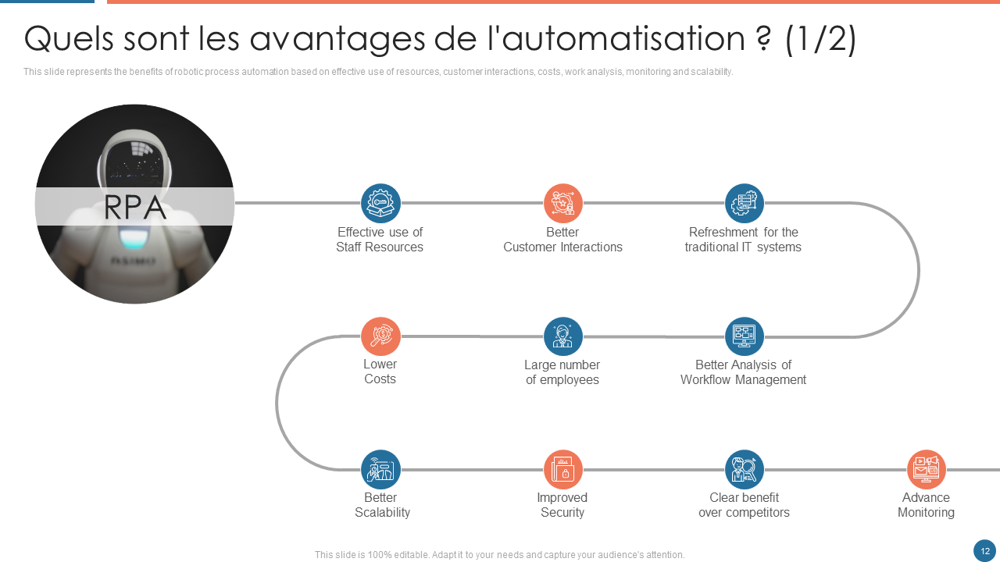

Transformation des Méthodes de Production
L’Industrie 4.0 représente une transformation radicale des méthodes de
production, intégrant des robots intelligents et des systèmes avancés
d’automatisation dans les chaînes d'approvisionnement. Ces robots,
souvent dotés de capacités d’apprentissage automatique et
d'intelligence artificielle, sont capables de s’adapter à divers
processus de fabrication, optimisant ainsi l’utilisation des
ressources tout en minimisant les déchets. Grâce à l’Internet des
objets (IoT), ces machines interconnectées peuvent communiquer entre
elles en temps réel, recueillir des données sur leur performance, et
ajuster leurs opérations en fonction des fluctuations du marché. Par
exemple, un système de production peut détecter une augmentation
soudaine de la demande pour un produit particulier et redistribuer
automatiquement les tâches entre les machines pour y répondre
rapidement. Cette interconnexion non seulement améliore l'efficacité
opérationnelle, mais permet également une personnalisation accrue des
produits, répondant mieux aux besoins spécifiques des consommateurs.

Avantages de l'Automatisation
Les avantages de l'automatisation dans l'industrie sont multiples et
significatifs. L'augmentation de la productivité est l'un des
résultats les plus immédiats, permettant aux entreprises de produire
plus en moins de temps. En parallèle, l'automatisation contribue à
améliorer la qualité des produits en réduisant les erreurs humaines,
ce qui se traduit par des produits plus uniformes et fiables. En
outre, la réduction des coûts de production est un facteur clé qui
incite les entreprises à adopter ces technologies, en permettant une
meilleure gestion des ressources et une réduction des pertes.
Cependant, cette évolution soulève également des questions critiques
concernant l'emploi. De nombreux travailleurs risquent de perdre leur
poste en raison de l'automatisation, tandis que d'autres devront être
requalifiés pour occuper des rôles axés sur la gestion, la supervision
et le contrôle des systèmes automatisés. Il devient donc essentiel
pour les entreprises et les gouvernements de mettre en place des
programmes de formation afin de préparer la main-d'œuvre aux exigences
d'un marché en constante évolution.

Sécurité et Cybersécurité
Avec l'intégration croissante de technologies avancées dans le secteur
industriel, la sécurité et la cybersécurité sont devenues des
préoccupations majeures. Les entreprises investissent considérablement
dans des technologies de cybersécurité pour protéger leurs systèmes
contre les menaces potentielles liées à cette connectivité accrue. Les
risques de cyberattaques, qui peuvent paralyser des chaînes de
production entières, nécessitent des protocoles de sécurité rigoureux.
Par exemple, l'implémentation de systèmes de surveillance en temps
réel et de logiciels de détection d'intrusions est essentielle pour
prévenir les violations de données. De plus, la formation des employés
sur les meilleures pratiques en matière de sécurité numérique devient
une priorité. À mesure que l'Industrie 4.0 continue de progresser, la
nécessité d’un cadre de sécurité robuste pour protéger les
informations sensibles et assurer la continuité des opérations ne fera
qu’augmenter.